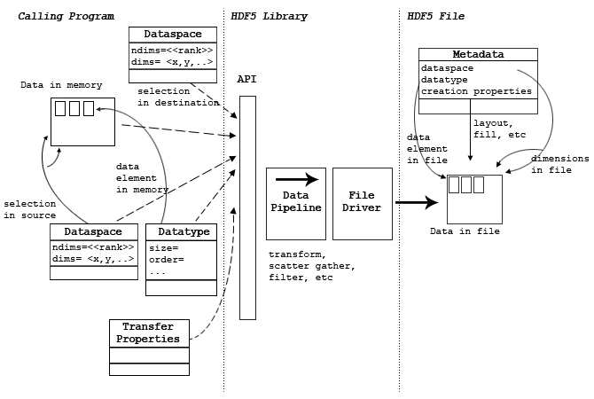
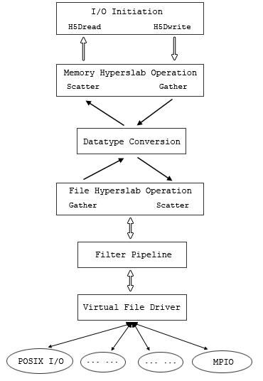
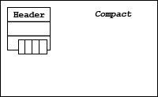
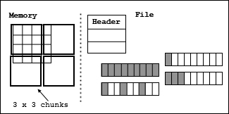

An HDF5 dataset is an object composed of a collection of data elements, or raw data, and metadata that stores a description of the data elements, data layout, and all other information necessary to write, read, and interpret the stored data. From the viewpoint of the application the raw data is stored as a one-dimensional or multi-dimensional array of elements (the raw data), those elements can be any of several numerical or character types, small arrays, or even compound types similar to C structs. The dataset object may have attribute objects. See the figure below.
| Figure 1. Application view of a dataset |
A dataset object is stored in a file in two parts: a header and a data array. The header contains information that is needed to interpret the array portion of the dataset, as well as metadata (or pointers to metadata) that describes or annotates the dataset. Header information includes the name of the object, its dimensionality, its number-type, information about how the data itself is stored on disk (the storage layout), and other information used by the library to speed up access to the dataset or maintain the file's integrity.
The HDF5 dataset interface, comprising the H5D functions, provides a mechanism for managing HDF5 datasets including the transfer of data between memory and disk and the description of dataset properties.
A dataset is used by other HDF5 APIs, either by name or by a handle (e.g., returned by H5Dopen).
A dataset can be added to a group with one of the H5Lcreate calls, and deleted from a group with H5Ldelete. The link and unlink operations use the name of an object, which may be a dataset. The dataset does not have to open to be linked or unlinked.
A dataset may be the target of an object reference. The object reference is created by H5Rcreate with the name of an object which may be a dataset and the reference type H5R_OBJECT. The dataset does not have to be open to create a reference to it.
An object reference may also refer to a region (selection) of a dataset. The reference is created with H5Rcreate and a reference type of H5R_DATASET_REGION.
An object reference can be accessed by a call to H5Rdereference. When the reference is to a dataset or dataset region, the H5Rdeference call returns a handle to the dataset just as if H5open has been called.
A dataset may have user-defined attributes which are created with H5Acreate
and accessed through the H5A API. To create an attribute for a dataset, the
dataset must be open, and the handle is passed to H5Acreate. The attributes of
a dataset are discovered and opened using H5Aopen_name, H5Aopen_idx, or H5Aiterate;
these functions use the handle of the dataset. An attribute can be deleted with H5Adelete
which also uses the handle of the dataset.
2. Dataset Function Summaries
Functions that can be used with datasets (H5D functions) and property
list functions that can used with datasets (H5P functions) are listed below.
| Function Listing 1. Dataset functions (H5D) | |
|
C Function F90 Function |
Purpose |
H5Dcreate
|
Creates a dataset at the specified location. The C function is a macro: see “API Compatibility Macros in HDF5.” |
H5Dcreate_anon
|
Creates a dataset in a file without linking it into the file structure. |
H5Dopen
|
Opens an existing dataset. The C function is a macro: see “API Compatibility Macros in HDF5.” |
H5Dclose
|
Closes the specified dataset. |
H5Dget_space
|
Returns an identifier for a copy of the dataspace for a dataset. |
H5Dget_space_status
|
Determines whether space has been allocated for a dataset. |
H5Dget_type
|
Returns an identifier for a copy of the datatype for a dataset. |
H5Dget_create_plist
|
Returns an identifier for a copy of the dataset creation property list for a dataset. |
H5Dget_access_plist
|
Returns the dataset access property list associated with a dataset. |
H5Dget_offset
|
Returns the dataset address in a file. |
H5Dget_storage_size
|
Returns the amount of storage required for a dataset. |
H5Dvlen_get_buf_size
|
Determines the number of bytes required to store variable-length (VL) data. |
H5Dvlen_reclaim
|
Reclaims VL datatype memory buffers. |
H5Dread
|
Reads raw data from a dataset into a buffer. |
H5Dwrite
|
Writes raw data from a buffer to a dataset. |
H5Diterate
|
Iterates over all selected elements in a dataspace. |
H5Dfill
|
Fills dataspace elements with a fill value in a memory buffer. |
H5Dset_extent
|
Changes the sizes of a dataset’s dimensions. |
| Function Listing 2. Dataset creation property list functions (H5P) | |
|
C Function F90 Function |
Purpose |
H5Pset_layout
|
Sets the type of storage used to store the raw data for a dataset. |
H5Pget_layout
|
Returns the layout of the raw data for a dataset. |
H5Pset_chunk
|
Sets the size of the chunks used to store a chunked layout dataset. |
H5Pget_chunk
|
Retrieves the size of chunks for the raw data of a chunked layout dataset. |
H5Pset_chunk_cache
|
Sets the raw data chunk cache parameters. |
H5Pget_chunk_cache
|
Retrieves the raw data chunk cache parameters. |
H5Pset_deflate
|
Sets compression method and compression level. |
H5Pset_fill_value
|
Sets the fill value for a dataset. |
H5Pget_fill_value
|
Retrieves a dataset fill value. |
H5Pfill_value_defined
|
Determines whether the fill value is defined. |
H5Pset_fill_time
|
Sets the time when fill values are written to a dataset. |
H5Pget_fill_time
|
Retrieves the time when fill value are written to a dataset. |
H5Pset_alloc_time
|
Sets the timing for storage space allocation. |
H5Pget_alloc_time
|
Retrieves the timing for storage space allocation. |
H5Pset_filter
|
Adds a filter to the filter pipeline. |
H5Pall_filters_avail
|
Verifies that all required filters are available. |
H5Pget_nfilters
|
Returns the number of filters in the pipeline. |
H5Pget_filter
|
Returns information about a filter in a pipeline. The C function is a macro: see “API Compatibility Macros in HDF5.” |
H5Pget_filter_by_id
|
Returns information about the specified filter. The C function is a macro: see “API Compatibility Macros in HDF5.” |
H5Pmodify_filter
|
Modifies a filter in the filter pipeline. |
H5Premove_filter
|
Deletes one or more filters in the filter pipeline. |
H5Pset_fletcher32
|
Sets up use of the Fletcher32 checksum filter. |
H5Pset_nbit
|
Sets up use of the n-bit filter. |
H5Pset_scaleoffset
|
Sets up use of the scale-offset filter. |
H5Pset_shuffle
|
Sets up use of the shuffle filter. |
H5Pset_szip
|
Sets up use of the Szip compression filter. |
H5Pset_external
|
Adds an external file to the list of external files. |
H5Pget_external_count
|
Returns the number of external files for a dataset. |
H5Pget_external
|
Returns information about an external file. |
H5Pset_char_encoding
|
Sets the character encoding used to encode a string. Use to set ASCII or UTF-8 character encoding for object names. |
H5Pget_char_encoding
|
Retrieves the character encoding used to create a string. |
| Function Listing 3. Dataset access property list functions (H5P) | |
|
C Function F90 Function |
Purpose |
H5Pset_buffer
|
Sets type conversion and background buffers. |
H5Pget_buffer
|
Reads buffer settings. |
H5Pset_edc_check
|
Sets whether to enable error-detection when reading a dataset. |
H5Pget_edc_check
|
Determines whether error-detection is enabled for dataset reads. |
H5Pset_filter_callback
|
Sets user-defined filter callback function. |
H5Pset_data_transform
|
Sets a data transform expression. |
H5Pget_data_transform
|
Retrieves a data transform expression. |
H5Pset_type_conv_cb
|
Sets user-defined datatype conversion callback function. |
H5Pget_type_conv_cb
|
Gets user-defined datatype conversion callback function. |
H5Pset_hyper_vector_size
|
Sets number of I/O vectors to be read/written in hyperslab I/O. |
H5Pget_hyper_vector_size
|
Retrieves number of I/O vectors to be read/written in hyperslab I/O. |
H5Pset_btree_ratios
|
Sets B-tree split ratios for a dataset transfer property list. |
H5Pget_btree_ratios
|
Gets B-tree split ratios for a dataset transfer property list. |
H5Pset_vlen_mem_manager
|
Sets the memory manager for variable-length datatype allocation in
H5Dread and H5Dvlen_reclaim.
|
H5Pget_vlen_mem_manager
|
Gets the memory manager for variable-length datatype allocation in
H5Dread and H5Dvlen_reclaim.
|
H5Pset_dxpl_mpio
|
Sets data transfer mode. |
H5Pget_dxpl_mpio
|
Returns the data transfer mode. |
H5Pset_dxpl_mpio_chunk_opt
|
Sets a flag specifying linked-chunk I/O or multi-chunk I/O. |
H5Pset_dxpl_mpio_chunk_opt_num
|
Sets a numeric threshold for linked-chunk I/O. |
H5Pset_dxpl_mpio_chunk_opt_ratio
|
Sets a ratio threshold for collective I/O. |
H5Pset_dxpl_mpio_collective_opt
|
Sets a flag governing the use of independent versus collective I/O. |
H5Pset_dxpl_multi
|
Sets the data transfer property list for the multi-file driver. |
H5Pget_dxpl_multi
|
Returns multi-file data transfer property list information. |
H5Pset_multi_type
|
Sets the type of data property for the MULTI driver. |
H5Pget_multi_type
|
Retrieves the type of data property for the MULTI driver. |
H5Pset_small_data_block_size
|
Sets the size of a contiguous block reserved for small data. |
H5Pget_small_data_block_size
|
Retrieves the current small data block size setting. |
This section explains the programming model for datasets.
The programming model for using a dataset has three main phases:
These three phases or steps are described in more detail below the figure.
A dataset may be opened several times and operations performed with several different handles to the same dataset. All the operations affect the dataset, although the calling program must synchronize if necessary to serialize accesses.
Note that the dataset remains open until the last handle is closed. The figure below shows the basic sequence of operations.
| Figure 2. Dataset programming sequence |
Creation and data access operations may have optional parameters which are set with property lists. The general programming model is:
The steps below describe the programming phases or steps for using a dataset.
A new dataset is created by a call to H5Dcreate. If successful, the call returns a handle for the newly created dataset.
Access to an existing dataset is obtained by a call to H5Dopen. This call returns a handle for the existing dataset.
An object reference may be dereferenced to obtain a handle to the dataset it points to.
In each of these cases, the successful call returns a handle to the dataset. The handle is used in subsequent operations until the dataset is closed.
The dataset handle can be used to write and read data to the dataset, to query and set properties, and to perform other operations such as adding attributes, linking in groups, and creating references.
The dataset handle can be used for any number of operations until the dataset is closed.
When all operations are completed, the dataset handle should be closed. This releases the dataset.
After the handle is closed, it cannot be used for further operations.
A dataset is created and initialized with a call to H5Dcreate. The dataset create operation sets permanent properties of the dataset:
These properties cannot be changed for the life of the dataset, although the dataspace may be expanded up to its maximum dimensions.
A dataset name is a sequence of alphanumeric ASCII characters. The full name would include a tracing of the group hierarchy from the root group of the file, e.g., /rootGroup/groupA/subgroup23/dataset1. The local name or relative name within the lowest-level group containing the dataset would include none of the group hierarchy. e.g., Dataset1.
The dataspace of a dataset defines the number of dimensions and the size of
each dimension.
The dataspace defines the number of dimensions,
and the maximum dimension sizes and current size of each dimension.
The maximum dimension size can be a fixed value or the constant
H5D_UNLIMITED, in which case the actual dimension size
can be changed with calls to H5Dset_extent, up to the
maximum set with the maxdims parameter in the
H5Screate_simple call that established the
dataset’s original dimensions. The maximum dimension size is set
when the dataset is created and cannot be changed.
Raw data has a datatype which describes the layout of the raw data stored in the file. The datatype is set when the dataset is created and can never be changed. When data is transferred to and from the dataset, the HDF5 Library will assure that the data is transformed to and from the stored format.
Storage properties of the dataset are set when it is created. The required inputs table below shows the categories of storage properties. The storage properties cannot be changed after the dataset is created.
When a dataset is created, optional filters are specified. The filters are added to the data transfer pipeline when data is read or written. The standard library includes filters to implement compression, data shuffling, and error detection code. Additional user-defined filters may also be used.
The required filters are stored as part of the dataset, and the list may not be changed after the dataset is created. The HDF5 Library automatically applies the filters whenever data is transferred.
A newly created dataset has no attributes and no data values. The dimensions, datatype, storage properties, and selected filters are set. The table below lists the required inputs, and the second table below lists the optional inputs.
| Table 1. Required inputs | |
|
Required Inputs |
Description |
| Dataspace |
The shape of the array. |
| Datatype |
The layout of the stored elements. |
| Name |
The name of the dataset in the group. |
| Table 2. Optional inputs | |
|
Optional Inputs |
Description |
| Storage Layout |
How the data is organized in the file including chunking. |
| Fill Value |
The behavior and value for uninitialized data. |
| External Storage |
Option to store the raw data in an external file. |
| Folders |
Select optional filters to be applied, e.g., compression. |
To create a new dataset
Example 1 below shows example code to create an empty dataset. The dataspace is 7 x 8, and the datatype is a big-endian integer. The dataset is created with the name "dset1" and is a member of the root group, "/".
|
| Example 1. Create an empty dataset |
Example 2 below shows example code to create a similar dataset with a fill value of '-1'. This code has the same steps as in the example above, but uses a non-default property list. A file creation property list is created, and then the fill value is set to the desired value. Then the property list is passed to the H5Dcreate call.
|
| Example 2. Create a dataset with fill value set to -1 |
After this code is executed, the dataset has been created and written to the file. The data array is uninitialized. Depending on the storage strategy and fill value options that have been selected, some or all of the space may be allocated in the file, and fill values may be written in the file.
Data is transferred between memory and the raw data array of the dataset through H5Dwrite and H5Dread operations. A data transfer has the following basic steps:
Note that the location of the data in the file, the datatype of the data in the file, the storage properties, and the filters do not need to be specified because these are stored as a permanent part of the dataset. A selection of elements from the dataspace is specified; the selected elements may be the whole dataspace.
The figure below shows a diagram of a write operation which transfers a data array from memory to a dataset in the file (usually on disk). A read operation has similar parameters with the data flowing the other direction.
|  |
| Figure 3. A write operation |
The calling program must allocate sufficient memory to store the data elements to be transferred. For a write (from memory to the file), the memory must be initialized with the data to be written to the file. For a read, the memory must be large enough to store the elements that will be read. The amount of storage needed can be computed from the memory datatype (which defines the size of each data element) and the number of elements in the selection.
The memory layout of a single data element is specified by the memory datatype. This specifies the size, alignment, and byte order of the element as well as the datatype class. Note that the memory datatype must be the same datatype class as the file, but may have different byte order and other properties. The HDF5 Library automatically transforms data elements between the source and destination layouts. See the chapter "HDF5 Datatypes" for more details.
For a write, the memory datatype defines the layout of the data to be written; an example is IEEE floating-point numbers in native byte order. If the file datatype (defined when the dataset is created) is different but compatible, the HDF5 Library will transform each data element when it is written. For example, if the file byte order is different than the native byte order, the HDF5 Library will swap the bytes.
For a read, the memory datatype defines the desired layout of the data to be read. This must be compatible with the file datatype, but should generally use native formats, e.g., byte orders. The HDF5 Library will transform each data element as it is read.
The data transfer will transfer some or all of the elements of the dataset depending on the dataspace selection. The selection has two dataspace objects: one for the source, and one for the destination. These objects describe which elements of the dataspace to be transferred. Some (partial I/O) or all of the data may be transferred. Partial I/O is defined by defining hyperslabs or lists of elements in a dataspace object.
The dataspace selection for the source defines the indices of the elements to be read or written. The two selections must define the same number of points, but the order and layout may be different. The HDF5 Library automatically selects and distributes the elements according to the selections. It might, for example, perform a scatter-gather or sub-set of the data.
For some data transfers, additional parameters should be set using the transfer property list. The table below lists the categories of transfer properties. These properties set parameters for the HDF5 Library and may be used to pass parameters for optional filters and file drivers. For example, transfer properties are used to select independent or collective operation when using MPI-I/O.
| Table 3. Categories of transfer properties | |
|
Properties |
Description |
| Library parameters |
Internal caches, buffers, B-Trees, etc. |
| Memory management |
Variable-length memory management, data overwrite |
| File driver management |
Parameters for file drivers |
| Filter management |
Parameters for filters |
The data transfer is done by calling H5Dread or H5Dwrite with the parameters described above. The HDF5 Library constructs the required pipeline, which will scatter-gather, transform datatypes, apply the requested filters, and use the correct file driver.
During the data transfer, the transformations and filters are applied to each element of the data in the required order until all the data is transferred.
To perform a data transfer, it is necessary to allocate and initialize memory, describe the source and destination, set required and optional transfer properties, and call the H5D API.
The basic procedure to write to a dataset is the following:
Example 3 below shows example code to write a 4 x 6 array of integers. In the example, the data is initialized in the memory array dset_data. The dataset has already been created in the file, so it is opened with H5Dopen.
The data is written with H5Dwrite. The arguments are the dataset handle, the memory datatype (H5T_NATIVE_INT), the memory and file selections (H5S_ALL in this case: the whole array), and the default (empty) property list. The last argument is the data to be transferred.
|
| Example 3. Write an array of integers |
Example 4 below shows a similar write except for setting a non-default value for the transfer buffer. The code is the same as Example 3, but a transfer property list is created, and the desired buffer size is set. The H5Dwrite function has the same arguments, but uses the property list to set the buffer.
|
| Example 4. Write an array using a property list |
The basic procedure to read from a dataset is the following:
The example below shows code that reads a 4 x 6 array of integers from a dataset called "dset1". First, the dataset is opened. The H5Dread call has parameters:
|
| Example 5. Read an array from a dataset |
The functions listed below allow the user to retrieve information regarding a dataset including the datatype, the dataspace, the dataset creation property list, and the total stored size of the data.
| Function Listing 4. Retrieve dataset information | |
|
Query Function |
Description |
| H5Dget_space |
Retrieve the dataspace of the dataset as stored in the file. |
| H5Dget_type |
Retrieve the datatype of the dataset as stored in the file. |
| H5Dget_create_plist |
Retrieve the dataset creation properties. |
| H5Dget_storage_size |
Retrieve the total bytes for all the data of the dataset. |
| H5Dvlen_get_buf_size |
Retrieve the total bytes for all the variable-length data of the dataset. |
The example below illustrates how to retrieve dataset information.
|
| Example 6. Retrieve dataset information |
The HDF5 Library implements data transfers through a pipeline which implements data transformations (according to the datatype and selections), chunking (as requested), and I/O operations using different mechanisms (file drivers). The pipeline is automatically configured by the HDF5 Library. Metadata is stored in the file so that the correct pipeline can be constructed to retrieve the data. In addition, optional filters such as compression may be added to the standard pipeline.
The figure below illustrates data layouts for different layers of an application using HDF5. The application data is organized as a multidimensional array of elements. The HDF5 format specification defines the stored layout of the data and metadata. The storage layout properties define the organization of the abstract data. This data is written and read to and from some storage medium.
| Figure 4. Data layouts in an application |
The last stage of a write (and first stage of a read) is managed by an HDF5 file driver module. The virtual file layer of the HDF5 Library implements a standard interface to alternative I/O methods, including memory (AKA "core") files, single serial file I/O, multiple file I/O, and parallel I/O. The file driver maps a simple abstract HDF5 file to the specific access methods.
The raw data of an HDF5 dataset is conceived to be a multi-dimensional array of data elements. This array may be stored in the file according to several storage strategies:
The storage strategy does not affect data access methods except that certain operations may be more or less efficient depending on the storage strategy and the access patterns.
Overall, the data transfer operations (H5Dread and H5Dwrite) work identically for any storage method, for any file driver, and for any filters and transformations. The HDF5 Library automatically manages the data transfer process. In some cases, transfer properties should or must be used to pass additional parameters such as MPI/IO directives when used the parallel file driver.
When data is written or read to or from an HDF5 file, the HDF5 Library passes the data through a sequence of processing steps which are known as the HDF5 data pipeline. This data pipeline performs operations on the data in memory such as byte swapping, alignment, scatter-gather, and hyperslab selections. The HDF5 Library automatically determines which operations are needed and manages the organization of memory operations such as extracting selected elements from a data block. The data pipeline modules operate on data buffers: each module processes a buffer and passes the transformed buffer to the next stage.
The table below lists the stages of the data pipeline. The figure below the table shows the order of processing during a read or write.
| Table 4. Stages of the data pipeline | |
|
Layers |
Description |
| I/O initiation |
Initiation of HDF5 I/O activities (H5Dwrite and H5Dread) in a user's application program. |
| Memory hyperslab operation |
Data is scattered to (for read), or gathered from (for write) the application's memory buffer (bypassed if no datatype conversion is needed). |
| Datatype conversion |
Datatype is converted if it is different between memory and storage (bypassed if no datatype conversion is needed). |
| File hyperslab operation |
Data is gathered from (for read), or scattered to (for write) to file space in memory (bypassed if no datatype conversion is needed). |
| Filter pipeline |
Data is processed by filters when it passes. Data can be modified and restored here (bypassed if no datatype conversion is needed, no filter is enabled, or dataset is not chunked). |
| Virtual File Layer |
Facilitate easy plug-in file drivers such as MPIO or POSIX I/O. |
| Actual I/O |
Actual file driver used by the library such as MPIO or STDIO. |
|
 |
| Figure 5. The processing order in the data pipeline |
The HDF5 Library automatically applies the stages as needed.
When the memory dataspace selection is other than the whole dataspace, the memory hyperslab stage scatters/gathers the data elements between the application memory (described by the selection) and a contiguous memory buffer for the pipeline. On a write, this is a gather operation; on a read, this is a scatter operation.
When the memory datatype is different from the file datatype, the datatype conversion stage transforms each data element. For example, if data is written from 32-bit big-endian memory, and the file datatype is 32-bit little-endian, the datatype conversion stage will swap the bytes of every elements. Similarly, when data is read from the file to native memory, byte swapping will be applied automatically when needed.
The file hyperslab stage is similar to the memory hyperslab stage, but is managing the arrangement of the elements according to the dataspace selection. When data is read, data elements are gathered from the data blocks from the file to fill the contiguous buffers which are then processed by the pipeline. When data is read, the elements from a buffer are scattered to the data blocks of the file.
In addition to the standard pipeline, optional stages, called filters, can be inserted in the pipeline. The standard distribution includes optional filters to implement compression and error checking. User applications may add custom filters as well.
The HDF5 Library distribution includes or employs several optional filters. These are listed in the table below. The filters are applied in the pipeline between the virtual file layer and the file hyperslab operation. See the figure above. The application can use any number of filters in any order.
| Table 5. Data pipeline filters | |
|
Filter |
Description |
| gzip compression |
Data compression using
|
| Szip compression |
Data compression using the Szip library. See The HDF Group website for more information regarding the Szip filter. |
| N-bit compression |
Data compression using an algorithm specialized for n-bit datatypes. |
| Scale-offset compression |
Data compression using using a “scale and offset” algorithm. |
| Shuffling |
To improve compression performance, data is regrouped by its byte position in the data unit. In other words, the 1st, 2nd, 3rd, and 4th bytes of integers are stored together respectively. |
| Fletcher32 |
Fletcher32 checksum for error-detection. |
Filters may be used only for chunked data and are applied to chunks of data between the file hyperslab stage and the virtual file layer. At this stage in the pipeline, the data is organized as fixed-size blocks of elements, and the filter stage processes each chunk separately.
Filters are selected by dataset creation properties, and some behavior may
be controlled by data transfer properties. The library determines what
filters must be applied and applies them in the order in which they were
set by the application. That is, if an application calls
H5Pset_shuffle and then H5Pset_deflate when
creating
a dataset’s creation property list, the library will apply the
shuffle filter first and then the deflate filter.
Information regarding the n-bit and scale-offset filters can be found in Using the N-bit Filter and Using the Scale-offset Filter, respectively.
I/O is performed by the HDF5 virtual file layer. The file driver interface writes and reads blocks of data; each driver module implements the interface using different I/O mechanisms. The table below lists the file drivers currently supported. Note that the I/O mechanisms are separated from the pipeline processing: the pipeline and filter operations are identical no matter what data access mechanism is used.
| Table 6. I/O file drivers | |
|
File Driver |
Description |
| H5FD_CORE |
Store in memory (optional backing store to disk file). |
| H5FD_FAMILY |
Store in a set of files. |
| H5FD_LOG |
Store in logging file. |
| H5FD_MPIO |
Store using MPI/IO. |
| H5FD_MULTI |
Store in multiple files. There are several options to control layout. |
| H5FD_SEC2 |
Serial I/O to file using Unix "section 2" functions. |
| H5FD_STDIO |
Serial I/O to file using Unix "stdio" functions. |
Each file driver writes/reads contiguous blocks of bytes from a logically contiguous address space. The file driver is responsible for managing the details of the different physical storage methods.
In serial environments, everything above the virtual file layer tends to work identically no matter what storage method is used.
Some options may have substantially different performance depending on the file driver that is used. In particular, multi-file and parallel I/O may perform considerably differently from serial drivers depending on chunking and other settings.
Data transfer properties set optional parameters that control parts of the
data pipeline. The function listing below shows transfer properties
that control the behavior of the library.
| Function Listing 5. Data transfer property list functions | |
|
Property |
Description |
| H5Pset_buffer |
Maximum size for the type conversion buffer and the background buffer. May also supply pointers to application-allocated buffers. |
| H5Pset_hyper_cache |
Whether to cache hyperslab blocks during I/O. |
| H5Pset_btree_ratios |
Set the B-tree split ratios for a dataset transfer property list. The split ratios determine what percent of children go in the first node when a node splits. |
Some filters and file drivers require or use additional parameters from the application program. These can be passed in the data transfer property list. The table below shows file driver property list functions.
| Function Listing 6. File driver property list functions | |
|
Property |
Description |
| H5Pset_dxpl_mpio |
Control the MPI I/O transfer mode (independent or collective) during data I/O operations. |
| H5Pset_dxpl_multi |
Sets the data transfer property list for the multi-file driver. |
| H5Pset_small_data_block_size |
Reserves blocks of size bytes for the contiguous storage of the raw data portion of small datasets. The HDF5 Library then writes the raw data from small datasets to this reserved space which reduces unnecessary discontinuities within blocks of metadata and improves I/O performance. |
| H5Pset_edc_check |
Disable/enable EDC checking for read. When selected, EDC is always written. |
The transfer properties are set in a property list which is passed as a parameter of the H5Dread or H5Dwrite call. The transfer properties are passed to each pipeline stage. Each stage may use or ignore any property in the list. In short, there is one property list that contains all the properties.
The raw data is conceptually a multi-dimensional array of elements that is stored as a contiguous array of bytes. The data may be physically stored in the file in several ways. The table below lists the storage strategies for a dataset.
| Table 7. Dataset storage strategies | |
|
Storage Strategy |
Description |
| Contiguous |
The dataset is stored as one continuous array of bytes. |
| Chunked |
The dataset is stored as fixed-size chunks. |
| Compact |
A small dataset is stored in the metadata header. |
The different storage strategies do not affect the data transfer operations of the dataset: reads and writes work the same for any storage strategy.
These strategies are described in the following sections.
A contiguous dataset is stored in the file as a header and a single continuous array of bytes. See the figure below. In the case of a multi-dimensional array, the data is serialized in row major order. By default, data is stored contiguously.
| Figure 6. Contiguous data storage |
Contiguous storage is the simplest model. It has several limitations. First, the dataset must be a fixed-size: it is not possible to extend the limit of dataset, or to have unlimited dimensions. Second, because data is passed through the pipeline as fixed-size blocks, compression and other filters cannot be used with contiguous data.
The data of a dataset may be stored as fixed-size chunks. See the figure below. A chunk is a hyper-rectangle of any shape. When a dataset is chunked, each chunk is read or written as a single I/O operation, and individually passed from stage to stage of the data pipeline.
|
|
| Figure 7. Chunked data storage |
Chunks may be any size and shape that fits in the dataspace of the dataset. For example, a three dimensional dataspace can be chunked as 3-D cubes, 2-D planes, or 1-D lines. The chunks may extend beyond the size of the dataspace. For example, a 3 x 3 dataset might by chunked in 2 x 2 chunks. Sufficient chunks will be allocated to store the array, and any extra space will not be accessible. So, to store the 3 x 3 array, four 2 x 2 chunks would be allocated with 5 unused elements stored.
Chunked datasets can be unlimited in any direction and can be compressed or filtered.
Since the data is read or written by chunks, chunking can have a dramatic effect on performance by optimizing what is read and written. Note, too, that for specific access patterns such as parallel I/O, decomposition into chunks can have a large impact on performance.
Two restrictions have been placed on chunk shape and size:
|
For contiguous and chunked storage, the dataset header information and data are stored in two (or more) blocks. Therefore, at least two I/O operations are required to access the data: one to access the header, and one (or more) to access data. For a small dataset, this is considerable overhead.
A small dataset may be stored in a continuous array of bytes in the
header block using the compact storage option. This dataset can be read
entirely in one operation which retrieves the header and data.
The dataset must fit in the header. This may vary depending on the
metadata that is stored. In general, a compact dataset should be
approximately 30 KB or less total size.
See the figure below.
|  |
| Figure 8. Compact data storage |
Data transfers can write or read some of the data elements of the dataset. This is controlled by specifying two selections: one for the source and one for the destination. Selections are specified by creating a dataspace with selections.
Selections may be a union of hyperslabs or a list of points. A hyperslab is a contiguous hyper-rectangle from the dataspace. Selected fields of a compound datatype may be read or written. In this case, the selection is controlled by the memory and file datatypes.
Summary of procedure:
For a detailed explanation of selections, see the chapter
"HDF5 Dataspaces and Partial I/O."
5. Allocation of Space in the File
When a dataset is created, space is allocated in the file for its header and initial data. The amount of space allocated when the dataset is created depends on the storage properties. When the dataset is modified (data is written, attributes added, or other changes), additional storage may be allocated if necessary.
| Table 8. Initial dataset size | |
|
Object |
Size |
| Header |
Variable, but typically around 256 bytes at the creation of a simple dataset with a simple datatype. |
| Data |
Size of the data array (number of elements x size of element). Space allocated in the file depends on the storage strategy and the allocation strategy. |
A dataset header consists of one or more header messages containing persistent metadata describing various aspects of the dataset. These records are defined in the HDF5 File Format Specification. The amount of storage required for the metadata depends on the metadata to be stored. The table below summarizes the metadata.
| Table 9. Metadata storage sizes | |
|
Header Information |
Approximate Storage Size |
| Datatype (required) |
Bytes or more. Depends on type. |
| Dataspace (required) |
Bytes or more. Depends on number of dimensions and hsize_t. |
|
Layout (required) |
Points to the stored data. Bytes or more. Depends on hsize_t and number of dimensions. |
| Filters |
Depends on the number of filters. The size of the filter message depends on the name and data that will be passed. |
The header blocks also store the name and values of attributes, so the total storage depends on the number and size of the attributes.
In addition, the dataset must have at least one link, including a name, which is stored in the file and in the group it is linked from.
The different storage strategies determine when and how much space is allocated for the data array. See the discussion of fill values below for a detailed explanation of the storage allocation.
For a continuous storage option, the data is stored in a single, contiguous block in the file. The data is nominally a fixed-size, (number of elements x size of element). The figure below shows an example of a two dimensional array stored as a contiguous dataset.
Depending on the fill value properties, the space may be allocated when the dataset is created or when first written (default), and filled with fill values if specified. For parallel I/O, by default the space is allocated when the dataset is created.

|
| Figure 9. A two dimensional array stored as a contiguous dataset |
For chunked storage, the data is stored in one or more chunks. Each chunk is a continuous block in the file, but chunks are not necessarily stored contiguously. Each chunk has the same size. The data array has the same nominal size as a contiguous array (number of elements x size of element), but the storage is allocated in chunks, so the total size in the file can be larger that the nominal size of the array. See the figure below.
If a fill value is defined, each chunk will be filled with the fill value. Chunks must be allocated when data is written, but they may be allocated when the file is created, as the file expands, or when data is written.
For serial I/O, by default chunks are allocated incrementally, as data is written to the chunk. For a sparse dataset, chunks are allocated only for the parts of the dataset that are written. In this case, if the dataset is extended, no storage is allocated.
For parallel I/O, by default chunks are allocated when the dataset is created or extended with fill values written to the chunk.
In either case, the default can be changed using fill value properties. For example, using serial I/O, the properties can select to allocate chunks when the dataset is created.
|  |
| Figure 10. A two dimensional array stored in chunks |
H5Dset_extent is used to change the current dimensions of the dataset within the limits of the dataspace. Each dimension can be extended up to its maximum or unlimited. Extending the dataspace may or may not allocate space in the file and may or may not write fill values, if they are defined. See the example code below.
The dimensions of the dataset can also reduced. If the sizes specified
are smaller than the dataset’s current dimension sizes, H5Dset_extent will
reduce the dataset’s dimension sizes to the specified values.
It is the user’s responsibility to ensure that valuable data is not
lost; H5Dset_extent does not check.
|
| Example 7. Using H5Dset_extent to increase the size of a dataset |
The HDF5 Library implements several strategies for when storage is allocated if and when it is filled with fill values for elements not yet written by the user. Different strategies are recommended for different storage layouts and file drivers. In particular, a parallel program needs storage allocated during a collective call (for example, create or extend) while serial programs may benefit from delaying the allocation until the data is written.
Two file creation properties control when to allocate space, when to write the fill value, and the actual fill value to write.
The table below shows the options for when data is allocated in the file. "Early" allocation is done during the dataset create call. Certain file drivers (especially MPI-I/O and MPI-POSIX) require space to be allocated when a dataset is created, so all processors will have the correct view of the data.
| Table 10. File storage allocation options | |
|
Strategy |
Description |
| Early |
Allocate storage for the dataset immediately when the dataset is created. |
| Late |
Defer allocating space for storing the dataset until the dataset is written. |
| Incremental |
Defer allocating space for storing each chunk until the chunk is written. |
| Default |
Use the strategy (Early, Late, or Incremental) for the storage method and access method. This is the recommended strategy. |
"Late" allocation is done at the time of the first write to dataset. Space for the whole dataset is allocated at the first write.
"Incremental" allocation (chunks only) is done at the time of the first write to the chunk. Chunks that have never been written are not allocated in the file. In a sparsely populated dataset, this option allocates chunks only where data is actually written.
The "Default" property selects the option recommended as appropriate for the storage method and access method. The defaults are shown in the table below. Note that "Early" allocation is recommended for all Parallel I/O, while other options are recommended as the default for serial I/O cases.
| Table 11. Default storage options | ||
|
|
Serial I/O |
Parallel I/O |
| Contiguous Storage |
Late |
Early |
| Chunked Storage |
Incremental |
Early |
| Compact Storage |
Early |
Early |
The second property is when to write the fill value. The possible values are "Never" and "Allocation". The table below shows these options.
| Table 12. When to write fill values | |
|
When |
Description |
| Never |
Fill value will never be written. |
| Allocation |
Fill value is written when space is allocated. (Default for chunked and contiguous data storage.) |
The third property is the fill value to write. The table below shows the values. By default, the data is filled with zeroes. The application may choose no fill value (Undefined). In this case, uninitialized data may have random values. The application may define a fill value of an appropriate type. See the chapter "HDF5 Datatypes" for more information regarding fill values.
| Table 13. Fill values | |
|
What to Write |
Description |
| Default |
By default, the library fills allocated space with zeroes. |
| Undefined |
Allocated space is filled with random values. |
| User-defined |
The application specifies the fill value. |
Together these three properties control the library's behavior. The table below summarizes the possibilities during the dataset create-write-close cycle.
| Table 14. Storage allocation and fill summary | |||
|
When to allocate space |
When to write fill value |
What fill value to write |
Library create-write-close behavior |
| Early |
Never |
- |
Library allocates space when dataset is created, but never writes a fill value to dataset. A read of unwritten data returns undefined values. |
| Late |
Never |
- |
Library allocates space when dataset is written to, but never writes a fill value to the dataset. A read of unwritten data returns undefined values. |
| Incremental |
Never |
- |
Library allocates space when a dataset or chunk (whichever is the smallest unit of space) is written to, but it never writes a fill value to a dataset or a chunk. A read of unwritten data returns undefined values. |
| - |
Allocation |
Undefined |
Error on creating the dataset. The dataset is not created. |
| Early |
Allocation |
Default or User-defined |
Allocate space for the dataset when the dataset is created. Write the fill value (default or user-defined) to the entire dataset when the dataset is created. |
| Late |
Allocation |
Default or User-defined |
Allocate space for the dataset when the application first writes data values to the dataset. Write the fill value to the entire dataset before writing application data values. |
| Incremental |
Allocation |
Default or User-defined |
Allocate space for the dataset when the application first writes data values to the dataset or chunk (whichever is the smallest unit of space). Write the fill value to the entire dataset or chunk before writing application data values. |
During the H5Dread function call, the library behavior depends on whether space has been allocated, whether the fill value has been written to storage, how the fill value is defined, and when to write the fill value. The table below summarizes the different behaviors.
| Table 15. H5Dread summary | |||
|
Is space allocated in the file? |
What is the fill value? |
When to write fill value? |
Library read behavior |
| No |
Undefined |
<<any>> |
Error. Cannot create this dataset. |
| No |
Default or User-defined |
<<any>> |
Fill the memory buffer with the fill value. |
| Yes |
Undefined |
<<any>> |
Return data from storage (dataset). Trash is possible if the application has not written data to the portion of the dataset being read. |
| Yes |
Default or User-defined |
Never |
Return data from storage (dataset). Trash is possible if the application has not written data to the portion of the dataset being read. |
| Yes |
Default or User-defined |
Allocation |
Return data from storage (dataset). |
There are two cases to consider depending on whether the space in the file has been allocated before the read or not. When space has not yet been allocated and if a fill value is defined, the memory buffer will be filled with the fill values and returned. In other words, no data has been read from the disk. If space has been allocated, the values are returned from the stored data. The unwritten elements will be filled according to the fill value.
HDF5 does not at this time provide an easy mechanism to remove a dataset from a file or to reclaim the storage space occupied by a deleted object.
Removing a dataset and reclaiming the space it used can be done with the H5Ldelete function and the h5repack utility program. With the H5Ldelete function, links to a dataset can be removed from the file structure. After all the links have been removed, the dataset becomes inaccessible to any application and is effectively removed from the file. The way to recover the space occupied by an unlinked dataset is to write all of the objects of the file into a new file. Any unlinked object is inaccessible to the application and will not be included in the new file. Writing objects to a new file can be done with a custom program or with the h5repack utility program.
See the chapter "HDF5 Groups" for further discussion of HDF5 file structures and the use of links.
The system resources required for HDF5 objects such as datasets, datatypes, and dataspaces should be released once access to the object is no longer needed. This is accomplished via the appropriate close function. This is not unique to datasets but a general requirement when working with the HDF5 Library; failure to close objects will result in resource leaks.
In the case where a dataset is created or data has been transferred, there are several objects that must be closed. These objects include datasets, datatypes, dataspaces, and property lists.
The application program must free any memory variables and buffers it allocates. When accessing data from the file, the amount of memory required can be determined by calculating the size of the memory datatype and the number of elements in the memory selection.
Variable-length data are organized in two or more areas of memory. See "HDF5 Datatypes" for more information. When writing data, the application creates an array of vl_info_t which contains pointers to the elements. The elements might be, for example, strings. In the file, the variable-length data is stored in two parts: a heap with the variable-length values of the data elements and an array of vlinfo_t elements. When the data is read, the amount of memory required for the heap can be determined with the H5Dget_vlen_buf_size call.
The data transfer property may be used to set a custom memory manager for allocating variable-length data for a H5Dread. This is set with the H5Pset_vlen_mem_manager call.
To free the memory for variable-length data, it is necessary to visit each element, free the variable-length data, and reset the element. The application must free the memory it has allocated. For memory allocated by the HDF5 Library during a read, the H5Dvlen_reclaim function can be used to perform this operation.
The external storage format allows data to be stored across a set of non-HDF5 files. A set of segments (offsets and sizes) in one or more files is defined as an external file list, or EFL, and the contiguous logical addresses of the data storage are mapped onto these segments. Currently, only the H5D_CONTIGUOUS storage format allows external storage. External storage is enabled by a dataset creation property. The table below shows the API.
| Table 16. External storage API | |
|
Function |
Description |
herr_t H5Pset_external (hid_t plist, const char *name, off_t offset,
hsize_t size)
|
This function adds a new segment to the end of the external file list of the specified dataset creation property list. The segment begins a byte offset of file name and continues for size bytes. The space represented by this segment is adjacent to the space already represented by the external file list. The last segment in a file list may have the size H5F_UNLIMITED, in which case the external file may be of unlimited size and no more files can be added to the external files list. |
int H5Pget_external_count (hid_t plist) |
Calling this function returns the number of segments in an external file list. If the dataset creation property list has no external data, then zero is returned. |
herr_t H5Pget_external (hid_t plist, int idx, size_t name_size,
char *name, off_t *offset, hsize_t *size) |
This is the counterpart for the H5Pset_external() function. Given a dataset creation property list and a zero-based index into that list, the file name, byte offset, and segment size are returned through non-null arguments. At most name_size characters are copied into the name argument which is not null terminated if the file name is longer than the supplied name buffer (this is similar to strncpy()). |
The figure below shows an example of how a contiguous, one-dimensional dataset is
partitioned into three parts and each of those parts is stored in a segment
of an external file. The top rectangle represents the logical address space
of the dataset while the bottom rectangle represents an external file.

|
| Figure 11. External file storage |
The example below shows code that defines the external storage for the example. Note that the segments are defined in order of the logical addresses they represent, not their order within the external file. It would also have been possible to put the segments in separate files. Care should be taken when setting up segments in a single file since the library doesn't automatically check for segments that overlap.
|
| Example 8. External storage |
The figure below shows an example of how a contiguous, two-dimensional dataset is partitioned into three parts and each of those parts is stored in a separate external file. The top rectangle represents the logical address space of the dataset while the bottom rectangles represent external files.

|
| Figure 12. Partitioning a 2-D dataset for external storage |
The example below shows code for the partitioning described above. In this example, the library maps the multi-dimensional array onto a linear address space as defined by the HDF5 format specification, and then maps that address space into the segments defined in the external file list.
|
| Example 9. Partitioning a 2-D dataset for external storage |
The segments of an external file can exist beyond the end of the (external) file. The library reads that part of a segment as zeros. When writing to a segment that exists beyond the end of a file, the external file is automatically extended. Using this feature, one can create a segment (or set of segments) which is larger than the current size of the dataset. This allows the dataset to be extended at a future time (provided the dataspace also allows the extension).
All referenced external data files must exist before performing raw data I/O on the dataset. This is normally not a problem since those files are being managed directly by the application or indirectly through some other library. However, if the file is transferred from its original context, care must be taken to assure that all the external files are accessible in the new location.
N-bit data has n significant bits, where n may not correspond to a precise number of bytes. On the other hand, computing systems and applications universally, or nearly so, run most efficiently when manipulating data as whole bytes or multiple bytes.
Consider the case of 12-bit integer data. In memory, that data will be handled in at least 2 bytes, or 16 bits, and on some platforms in 4 or even 8 bytes. The size of such a dataset can be significantly reduced when written to disk if the unused bits are stripped out.
The n-bit filter is provided for this purpose, packing n-bit data on output by stripping off all unused bits and unpacking on input, restoring the extra bits required by the computational processor.
An n-bit datatype is a datatype of n significant bits. Unless it is packed, an n-bit datatype is presented as an n-bit bitfield within a larger-sized value. For example, a 12-bit datatype might be presented as a 12-bit field in a 16-bit, or 2-byte, value.
Currently, the datatype classes of n-bit datatype or n-bit field of a compound datatype or an array datatype are limited to integer or floating-point.
The HDF5 user can create an n-bit datatype through a series of of function calls. For example, the following calls create a 16-bit datatype that is stored in a 32-bit value with a 4-bit offset:
hid_t nbit_datatype = H5Tcopy(H5T_STD_I32LE); H5Tset_precision(nbit_datatype, 16); H5Tset_offset(nbit_datatype, 4);
In memory, one value of the above example n-bit datatype would be stored on a little-endian machine as follows:
| byte 3 | byte 2 | byte 1 | byte 0 |
???????? |
????SPPP |
PPPPPPPP |
PPPP???? |
Key:
S - sign bit,
P - significant bit,
? - padding bit
Sign bit is included in signed integer datatype precision. |
When data of an n-bit datatype is stored on disk using the n-bit filter, the filter packs the data by stripping off the padding bits; only the significant bits are retained and stored. The values on disk will appear as follows:
| 1st value | 2nd value | |
SPPPPPPP PPPPPPPP |
SPPPPPPP PPPPPPPP |
... |
Key:
S - sign bit,
P - significant bit,
? - padding bit
Sign bit is included in signed integer datatype precision. |
The n-bit filter can be used effectively for compressing data of an n-bit datatype, including arrays and the n-bit fields of compound datatypes. The filter supports complex situations where a compound datatype contains member(s) of a compound datatype or an array datatype has a compound datatype as the base type.
At present, the n-bit filter supports all datatypes. For datatypes of class time, string, opaque, reference, ENUM, and variable-length, the n-bit filter acts as a no-op which is short for no operation. For convenience, the rest of this section refers to such datatypes as no-op datatypes.
As is the case with all HDF5 filters, an application using the n-bit filter must store data with chunked storage.
The n-bit filter always compresses and decompresses according to dataset properties supplied by the HDF5 Library in the datatype, dataspace, or dataset creation property list.
The dataset datatype refers to how data is stored in an HDF5 file while the memory datatype refers to how data is stored in memory. The HDF5 Library will do datatype conversion when writing data in memory to the dataset or reading data from the dataset to memory if the memory datatype differs from the dataset datatype. Datatype conversion is performed by HDF5 Library before n-bit compression and after n-bit decompression.
The following subsections examine the common cases:
Integer data with a dataset of integer datatype of less than
full precision and a memory datatype of H5T_NATIVE_INT,
provides the simplest application of the n-bit filter.
The precision of H5T_NATIVE_INT is 8 muliplied by
sizeof(int).
This value, the size of an int in bytes, differs from
platform to platform; we assume a value of 4
for the following illustration.
We further assume the memory byte order to be little-endian.
In memory, therefore, the precision of H5T_NATIVE_INT
is 32 and the offset is 0.
One value of H5T_NATIVE_INT is laid out in memory
as follows:
| byte 3 | byte 2 | byte 1 | byte 0 |
|SPPPPPPP|PPPPPPPP|PPPPPPPP|PPPPPPPP|
|
|||
Key:
S - sign bit,
P - significant bit,
? - padding bit
Sign bit is included in signed integer datatype precision. |
|||
Suppose the dataset datatype has a precision of 16 and an offset of 4. After HDF5 converts values from the memory datatype to the dataset datatype, it passes something like the following to the n-bit filter for compression:
| byte 3 | byte 2 | byte 1 | byte 0 |
| |
|????????|????S|PPP|PPPPPPPP|PPPP|????|
|_________________|
truncated bits
|
|||
Key:
S - sign bit,
P - significant bit,
? - padding bit
Sign bit is included in signed integer datatype precision. |
|||
Notice that only the specified 16 bits (15 significant bits and the sign bit) are retained in the conversion. All other significant bits of the memory datatype are discarded because the dataset datatype calls for only 16 bits of precision. After n-bit compression, none of these discarded bits, known as padding bits will be stored on disk.
Things get more complicated in the case of a floating-point dataset
datatype class. This sub-section provides an example that
illustrates the conversion from a memory datatype of
H5T_NATIVE_FLOAT to a dataset datatype of class
floating-point.
As before, let the H5T_NATIVE_FLOAT be 4 bytes long,
and let the memory byte order be little-endian.
Per the IEEE standard, one value of H5T_NATIVE_FLOAT
is laid out in memory as follows:
| byte 3 | byte 2 | byte 1 | byte 0 |
|SEEEEEEE|EMMMMMMM|MMMMMMMM|MMMMMMMM|
| |||
Key:
S - sign bit,
E - exponent bit,
M - mantissa bit,
? - padding bit
Sign bit is included in floating-point datatype precision. |
|||
Suppose the dataset datatype has a precision of 20, offset of 7, mantissa size of 13, mantissa position of 7, exponent size of 6, exponent position of 20, and sign position of 26. (See “Definition of Datatypes,” section 4.3 of the “Datatypes” chapter in the HDF5 User’s Guide for a discussion of creating and modifying datatypes.)
After HDF5 converts values from the memory datatype to the dataset datatype, it passes something like the following to the n-bit filter for compression:
| byte 3 | byte 2 | byte 1 | byte 0 |
| |
|?????SEE|EEEE|MMMM|MMMMMMMM|M|???????|
|_______________|
truncated mantissa
| |||
Key:
S - sign bit,
E - exponent bit,
M - mantissa bit,
? - padding bit
Sign bit is included in floating-point datatype precision. |
|||
The sign bit and truncated mantissa bits are not changed during datatype conversion by the HDF5 Library. On the other hand, the conversion of the 8-bit exponent to a 6-bit exponent is a little tricky:
2(n-1)-1
The following formula is used for this exponent conversion:
exp8 - (2(8-1)-1) =
exp6 - (2(6-1)-1) =
actual exponent value
where exp8 is the stored decimal value
as represented by the 8-bit exponent
and exp6 is the stored decimal value
as represented by the 6-bit exponent
In this example, caution must be taken to ensure that,
after conversion, the actual exponent value is
within the range that can be represented by a 6-bit exponent.
For example,
an 8-bit exponent can represent values from -127 to 128 while
a 6-bit exponent can represent values only from -31 to 32.
N-bit Filter Behavior
The n-bit filter was designed to treat the incoming data byte by byte at the lowest level. The purpose was to make the n-bit filter as generic as possible so that no pointer cast related to the datatype is needed.
Bitwise operations are employed for packing and unpacking at the byte level.
Recursive function calls are used to treat compound and array datatypes.
No-op datatypes: The n-bit filter does not actually compress no-op datatypes. Rather, it copies the data buffer of the no-op datatype from the noncompressed buffer to the proper location in the compressed buffer; the compressed buffer has no holes. The term "compress" is used here simply to distinguish this function from the function that performs the reverse operation during decompression.
Atomic datatypes: The n-bit filter will find the bytes where significant bits are located and try to compress these bytes, one byte at a time, using a loop. At this level, the filter needs the following information:
The n-bit filter compresses from the most significant byte containing significant bits to the least significant byte. For big-endian data, therefore, the loop index progresses from smaller to larger while for little-endian, the loop index progresses from larger to smaller.
In the extreme case of when the n-bit datatype has full precision, this function copies the content of the entire noncompressed datatype to the compressed output buffer.
Compound datatypes: The n-bit filter will compress each data member of the compound datatype. If the member datatype is of an integer or floating-point datatype, the n-bit filter will call the function described above. If the member datatype is of a no-op datatype, the filter will call the function described above. If the member datatype is of a compound datatype, the filter will make a recursive call to itself. If the member datatype is of an array datatype, the filter will call the function described below
Array datatypes: The n-bit filter will use a loop to compress each array element in the array. If the base datatype of array element is of an integer or floating-point datatype, the n-bit filter will call the function described above If the base datatype is of a no-op datatype, the filter will call the function described above If the base datatype is of a compound datatype, the filter will call the function described above. If the member datatype is of an array datatype, the filter will make a recursive call of itself.
The n-bit decompression algorithm is very similar to n-bit compression. The only difference is that at the byte level, compression packs out all padding bits and stores only significant bits into a continous buffer (unsigned char) while decompression unpacks significant bits and inserts padding bits (zeros) at the proper positions to recover the data bytes as they existed before compression.
cd_value[]All of the information, or parameters, required by the n-bit filter
are gathered and stored in the array cd_values[] by the
private function H5Z_set_local_nbit and are passed
to another private function,
H5Z_filter_nbit, by the HDF5 Library.
These parameters are as follows:
The first and second parameters can be obtained using the HDF5 dataspace and datatype interface calls.
A compound datatype can have members of array or compound datatype. An array datatype's base datatype can be a complex compound datatype. Recursive calls are required to set parameters for these complex situations.
Before setting the parameters, the number of parameters should be
calculated to dynamically allocate the array cd_values[],
which will be passed to the HDF5 Library.
This also requires recursive calls.
For an atomic datatype (integer or floating-point), parameters that will be stored include the datatype's size, endianness, precision, and offset.
For a no-op datatype, only the size is required.
For a compound datatype, parameters that will be stored include the datatype's total size and number of members. For each member, its member offset needs to be stored. Other parameters for members will depends on the respective datatype class.
For an array datatype, the total size parameter should be stored. Other parameters for the array's base type depend on the base type's datatype class.
Further, to correctly retrieve the parameter for use of n-bit
compression or decompression later, parameters for distinguishing
between datatype classes should be stored.
Implementation
Three filter callback functions were written for the n-bit filter:
H5Z_can_apply_nbit
H5Z_set_local_nbit
H5Z_filter_nbit
These functions are called internally by the HDF5 Library.
A number of utility functions were written for the function
H5Z_set_local_nbit. Compression and decompression functions
were written and are called by function H5Z_filter_nbit.
All these functions are included in the file H5Znbit.c.
The public function H5Pset_nbit is called by
the application to set up the use of the n-bit filter.
This function is included in the file H5Pdcpl.c.
The application does not need to supply any parameters.
A scheme of storing parameters required by the n-bit filter in the
array cd_values[] was developed utilizing recursive
function calls.
Four private utility functions were written for storing the parameters
associated with atomic (integer or floating-point), no-op, array, and
compound datatypes:
H5Z_set_parms_atomic
H5Z_set_parms_array
H5Z_set_parms_nooptype
H5Z_set_parms_compound
The scheme is briefly described below.
cd_values[] are reserved for:
cd_values[]
i represents the index of cd_values[].
H5Z_set_local_nbit:
i = 2
cd_value[i]; increment i
H5Z_set_parms_atomic
H5Z_set_parms_array
H5Z_set_parms_compound
H5Z_set_parms_noopdatatype
i in cd_value[0] and
flag in cd_values[1]
H5Z_set_parms_atomic:cd_value[i]; increment i
cd_value[i]; increment i
cd_value[i]; increment i
cd_value[i]; increment i
cd_value[i]; increment i
H5Z_set_parms_nooptype:
cd_value[i]; increment i
cd_value[i]; increment i
H5Z_set_parms_array:
cd_value[i]; increment i
cd_value[i]; increment i
H5Z_set_parms_atomic
H5Z_set_parms_array
H5Z_set_parms_compound
H5Z_set_parms_noopdatatype
H5Z_set_parms_compound:
cd_value[i]; increment i
cd_value[i]; increment i
cd_values[i]; increment i
cd_values[i]; increment i
H5Z_set_parms_atomic
H5Z_set_parms_array
H5Z_set_parms_compound
H5Z_set_parms_noopdatatype
The n-bit compression and decompression functions above are called
by the private HDF5 function H5Z_filter_nbit.
The compress and decompress functions retrieve the n-bit parameters
from cd_values[] as it was passed by
H5Z_filter_nbit. Parameters are retrieved in exactly the
same order in which they are stored and lower-level compression and
decompression functions for different datatype classes are called.
N-bit compression is not implemented in place. Due to the
difficulty of calculating actual output buffer size after compression,
the same space as that of the input buffer is allocated for the output
buffer as passed to the compression function. However, the size of the
output buffer passed by reference to the compression function will
be changed (smaller) after the compression is complete.
Usage Examples
The following code example illustrates the use of the n-bit filter for writing and reading n-bit integer data.
#include "hdf5.h"
#include <stdlib.h>
#include <math.h>
#define H5FILE_NAME "nbit_test_int.h5"
#define DATASET_NAME "nbit_int"
#define NX 200
#define NY 300
#define CH_NX 10
#define CH_NY 15
int main(void)
{
hid_t file, dataspace, dataset, datatype, mem_datatype, dset_create_props;
hsize_t dims[2], chunk_size[2];
int orig_data[NX][NY];
int new_data[NX][NY];
int i, j;
size_t precision, offset;
/* Define dataset datatype (integer), and set precision, offset */
datatype = H5Tcopy(H5T_NATIVE_INT);
precision = 17; /* precision includes sign bit */
if(H5Tset_precision(datatype,precision)<0) {
printf("Error: fail to set precision\n");
return -1;
}
offset = 4;
if(H5Tset_offset(datatype,offset)<0) {
printf("Error: fail to set offset\n");
return -1;
}
/* Copy to memory datatype */
mem_datatype = H5Tcopy(datatype);
/* Set order of dataset datatype */
if(H5Tset_order(datatype, H5T_ORDER_BE)<0) {
printf("Error: fail to set endianness\n");
return -1;
}
/* Initiliaze data buffer with random data within correct range
* corresponding to the memory datatype's precision and offset.
*/
for (i=0; i < NX; i++)
for (j=0; j < NY; j++)
orig_data[i][j] = rand() % (int)pow(2, precision-1) <<offset;
/* Describe the size of the array. */
dims[0] = NX;
dims[1] = NY;
if((dataspace = H5Screate_simple (2, dims, NULL))<0) {
printf("Error: fail to create dataspace\n");
return -1;
}
/*
* Create a new file using read/write access, default file
* creation properties, and default file access properties.
*/
if((file = H5Fcreate (H5FILE_NAME, H5F_ACC_TRUNC,
H5P_DEFAULT, H5P_DEFAULT))<0) {
printf("Error: fail to create file\n");
return -1;
}
/*
* Set the dataset creation property list to specify that
* the raw data is to be partitioned into 10 x 15 element
* chunks and that each chunk is to be compressed.
*/
chunk_size[0] = CH_NX;
chunk_size[1] = CH_NY;
if((dset_create_props = H5Pcreate (H5P_DATASET_CREATE))<0) {
printf("Error: fail to create dataset property\n");
return -1;
}
if(H5Pset_chunk (dset_create_props, 2, chunk_size)<0) {
printf("Error: fail to set chunk\n");
return -1;
}
/*
* Set parameters for n-bit compression; check the description of
* the H5Pset_nbit function in the HDF5 Reference Manual for more
* information.
*/
if(H5Pset_nbit (dset_create_props)<0) {
printf("Error: fail to set nbit filter\n");
return -1;
}
/*
* Create a new dataset within the file. The datatype
* and dataspace describe the data on disk, which may
* be different from the format used in the application's
* memory.
*/
if((dataset = H5Dcreate2 (file, DATASET_NAME, datatype,
dataspace, H5P_DEFAULT,
dset_create_props, H5P_DEFAULT))<0) {
printf("Error: fail to create dataset\n");
return -1;
}
/*
* Write the array to the file. The datatype and dataspace
* describe the format of the data in the 'orig_data' buffer.
* The raw data is translated to the format required on disk,
* as defined above. We use default raw data transfer properties.
*/
if(H5Dwrite (dataset, mem_datatype, H5S_ALL, H5S_ALL,
H5P_DEFAULT, orig_data)<0) {
printf("Error: fail to write to dataset\n");
return -1;
}
H5Dclose (dataset);
if((dataset = H5Dopen2(file, DATASET_NAME, H5P_DEFAULT))<0) {
printf("Error: fail to open dataset\n");
return -1;
}
/*
* Read the array. This is similar to writing data,
* except the data flows in the opposite direction.
* Note: Decompression is automatic.
*/
if(H5Dread (dataset, mem_datatype, H5S_ALL, H5S_ALL,
H5P_DEFAULT, new_data)<0) {
printf("Error: fail to read from dataset\n");
return -1;
}
H5Tclose (datatype); H5Tclose (mem_datatype); H5Dclose (dataset); H5Sclose (dataspace); H5Pclose (dset_create_props); H5Fclose (file); return 0; } |
|
Example 10. N-bit compression for integer data Illustrates the use of the n-bit filter for writing and reading n-bit integer data. |
The following code example illustrates the use of the n-bit filter for writing and reading n-bit floating-point data.
#include "hdf5.h"
#define H5FILE_NAME "nbit_test_float.h5"
#define DATASET_NAME "nbit_float"
#define NX 2
#define NY 5
#define CH_NX 2
#define CH_NY 5
int main(void)
{
hid_t file, dataspace, dataset, datatype, dset_create_props;
hsize_t dims[2], chunk_size[2];
/* orig_data[] are initialized to be within the range that can be
* represented by dataset datatype (no precision loss during
* datatype conversion)
*/
float orig_data[NX][NY] = {{188384.00, 19.103516, -1.0831790e9,
-84.242188, 5.2045898}, {-49140.000, 2350.2500, -3.2110596e-1,
6.4998865e-5, -0.0000000}};
float new_data[NX][NY];
size_t precision, offset;
/* Define single-precision floating-point type for dataset
*-------------------------------------------------------------------
* size=4 byte, precision=20 bits, offset=7 bits,
* mantissa size=13 bits, mantissa position=7,
* exponent size=6 bits, exponent position=20,
* exponent bias=31.
* It can be illustrated in little-endian order as:
* (S - sign bit, E - exponent bit, M - mantissa bit,
* ? - padding bit)
*
* 3 2 1 0
* ?????SEE EEEEMMMM MMMMMMMM M???????
*
* To create a new floating-point type, the following
* properties must be set in the order of
* set fields -> set offset -> set precision -> set size.
* All these properties must be set before the type can function.
* Other properties can be set anytime. Derived type size cannot
* be expanded bigger than original size but can be decreased.
* There should be no holes among the significant bits. Exponent
* bias usually is set 2^(n-1)-1, where n is the exponent size.
*-------------------------------------------------------------------*/
datatype = H5Tcopy(H5T_IEEE_F32BE);
if(H5Tset_fields(datatype, 26, 20, 6, 7, 13)<0) {
printf("Error: fail to set fields\n");
return -1;
}
offset = 7;
if(H5Tset_offset(datatype,offset)<0) {
printf("Error: fail to set offset\n");
return -1;
}
precision = 20;
if(H5Tset_precision(datatype,precision)<0) {
printf("Error: fail to set precision\n");
return -1;
}
if(H5Tset_size(datatype, 4)<0) {
printf("Error: fail to set size\n");
return -1;
}
if(H5Tset_ebias(datatype, 31)<0) {
printf("Error: fail to set exponent bias\n");
return -1;
}
/* Describe the size of the array. */
dims[0] = NX;
dims[1] = NY;
if((dataspace = H5Screate_simple (2, dims, NULL))<0) {
printf("Error: fail to create dataspace\n");
return -1;
}
/*
* Create a new file using read/write access, default file
* creation properties, and default file access properties.
*/
if((file = H5Fcreate (H5FILE_NAME, H5F_ACC_TRUNC,
H5P_DEFAULT, H5P_DEFAULT))<0) {
printf("Error: fail to create file\n");
return -1;
}
/*
* Set the dataset creation property list to specify that
* the raw data is to be partitioned into 2 x 5 element
* chunks and that each chunk is to be compressed.
*/
chunk_size[0] = CH_NX;
chunk_size[1] = CH_NY;
if((dset_create_props = H5Pcreate (H5P_DATASET_CREATE))<0) {
printf("Error: fail to create dataset property\n");
return -1;
}
if(H5Pset_chunk (dset_create_props, 2, chunk_size)<0) {
printf("Error: fail to set chunk\n");
return -1;
}
/*
* Set parameters for n-bit compression; check the description
* of the H5Pset_nbit function in the HDF5 Reference Manual
* for more information.
*/
if(H5Pset_nbit (dset_create_props)<0) {
printf("Error: fail to set nbit filter\n");
return -1;
}
/*
* Create a new dataset within the file. The datatype
* and dataspace describe the data on disk, which may
* be different from the format used in the application's
* memory.
*/
if((dataset = H5Dcreate2 (file, DATASET_NAME, datatype,
dataspace, H5P_DEFAULT,
dset_creat_plists, H5P_DEFAULT))<0) {
printf("Error: fail to create dataset\n");
return -1;
}
/*
* Write the array to the file. The datatype and dataspace
* describe the format of the data in the 'orig_data' buffer.
* The raw data is translated to the format required on disk,
* as defined above. We use default raw data transfer properties.
*/
if(H5Dwrite (dataset, H5T_NATIVE_FLOAT, H5S_ALL, H5S_ALL,
H5P_DEFAULT, orig_data)<0) {
printf("Error: fail to write to dataset\n");
return -1;
}
H5Dclose (dataset);
if((dataset = H5Dopen2(file, DATASET_NAME, H5P_DEFAULT))<0) {
printf("Error: fail to open dataset\n");
return -1;
}
/*
* Read the array. This is similar to writing data,
* except the data flows in the opposite direction.
* Note: Decompression is automatic.
*/
if(H5Dread (dataset, H5T_NATIVE_FLOAT, H5S_ALL, H5S_ALL,
H5P_DEFAULT, new_data)<0) {
printf("Error: fail to read from dataset\n");
return -1;
}
H5Tclose (datatype);
H5Dclose (dataset);
H5Sclose (dataspace);
H5Pclose (dset_create_props);
H5Fclose (file);
return 0;
}
|
|
Example 11. N-bit compression for floating-point data Illustrates the use of the n-bit filter for writing and reading n-bit floating-point data. |
Because the array cd_values[] has to fit into an object
header message of 64K, the n-bit filter has an upper limit on the number
of n-bit parameters that can be stored in it. To be conservative, a maximum
of 4K is allowed for the number of parameters.
The n-bit filter currently only compresses n-bit datatypes or fields derived from integer or floating-point datatypes. The n-bit filter assumes padding bits of zero. This may not be true since the HDF5 user can set padding bit to be zero, one, or leave the background alone. However, it is expected the n-bit filter will be modified to adjust to such situations.
The n-bit filter does not have a way to handle the situation where the
fill value of a dataset is defined and the fill value is not of an n-bit
datatype although the dataset datatype is.
6.2. The Scale-offset Filter
Generally speaking, scale-offset compression performs a scale and/or offset operation on each data value and truncates the resulting value to a minimum number of bits (minimum-bits) before storing it.
The current scale-offset filter supports integer and floating-point datatypes only. For the floating-point datatype, float and double are supported, but long double is not supported.
Integer data compression uses a straight-forward algorithm. Floating-point data compression adopts the GRiB data packing mechanism which offers two alternate methods: a fixed minimum-bits method, and a variable minimum-bits method. Currently, only the variable minimum-bits method is implemented.
Like other I/O filters supported by the HDF5 Library, applications using the scale-offset filter must store data with chunked storage.
Integer type:
The minimum-bits of integer data can be determined by the filter.
For example, if the maximum value of data to be compressed is 7065
and the minimum value is 2970. Then the "span" of dataset values is
equal to (max-min+1), which is 4676. If no fill value is defined for the
dataset, the minimum-bits is: ceiling(log2(span)) = 12. With fill
value set, the minimum-bits is: ceiling(log2(span+1)) = 13.
HDF5 users can also set the minimum-bits. However, if the user gives a minimum-bits that is less than that calculated by the filter, the compression will be lossy.
Floating-point type: The basic idea of the scale-offset filter for the floating-point type is to transform the data by some kind of scaling to integer data, and then to follow the procedure of the scale-offset filter for the integer type to do the data compression. Due to the data transformation from floating-point to integer, the scale-offset filter is lossy in nature.
Two methods of scaling the floating-point data are used: the so-called D-scaling and E-scaling. D-scaling is more straightforward and easy to understand. For HDF5 1.8 release, only the D-scaling method has been implemented.
Before the filter does any real work, it needs to gather some information from the HDF5 Library through API calls. The parameters the filter needs are:
Size and sign are needed to determine what kind of pointer cast to use when retrieving values from the data buffer.
The pipeline of the filter can be divided into four parts: (1)pre-compression; (2)compression; (3)decompression; (4)post-decompression.
Depending on whether a fill value is defined or not, the filter will handle pre-compression and post-decompression differently.
The scale-offset filter only needs the memory byte order, size of datatype, and minimum-bits for compression and decompression.
Since decompression has no access to the original data, the minimum-bits and the minimum value need to be stored with the compressed data for decompression and post-decompression.
Pre-compression: During pre-compression minimum-bits is calculated if it is not set by the user. For more information on how minimum-bits are calculated, see section 6.1. "The N-bit Filter."
If the fill value is defined, finding the maximum and minimum values should ignore the data element whose value is equal to the fill value.
If no fill value is defined, the value of each data element is subtracted by the minimum value during this stage.
If the fill value is defined, the fill value is assigned to the maximum value. In this way minimum-bits can represent a data element whose value is equal to the fill value and subtracts the minimum value from a data element whose value is not equal to the fill value.
The fill value (if defined), the number of elements in a chunk, the class of the datatype, the size of the datatype, the memory order of the datatype, and other similar elements will be stored in the HDF5 object header for the post-decompression usage.
After pre-compression, all values are non-negative and are within the range that can be stored by minimum-bits.
Compression: All modified data values after pre-compression are packed together into the compressed data buffer. The number of bits for each data value decreases from the number of bits of integer (32 for most platforms) to minimum-bits. The value of minimum-bits and the minimum value are added to the data buffer and the whole buffer is sent back to the library. In this way, the number of bits for each modified value is no more than the size of minimum-bits.
Decompression: In this stage, the number of bits for each data value is resumed from minimum-bits to the number of bits of integer.
Post-decompression: For the post-decompression stage, the filter does the opposite of what it does during pre-compression except that it does not calculate the minimum-bits or the minimum value. These values were saved during compression and can be retrieved through the resumed data buffer. If no fill value is defined, the filter adds the minimum value back to each data element.
If the fill value is defined, the filter assigns the fill value to the data element whose value is equal to the maximum value that minimum-bits can represent and adds the minimum value back to each data element whose value is not equal to the maximum value that minimum-bits can represent.
The filter will do data transformation from floating-point type to integer type and then handle the data by using the procedure for handling the integer data inside the filter. Insignificant bits of floating-point data will be cut off during data transformation, so this filter is a lossy compression method.
There are two scaling methods: D-scaling and E-scaling.
The HDF5 1.8 release only supports D-scaling. D-scaling is short for
decimal scaling. E-scaling should be similar conceptually. In order
to transform data from floating-point to
integer, a scale factor is introduced. The minimum value will be calculated.
Each data element value will subtract the minimum value. The modified data
will be multiplied by 10 (Decimal) to the power of scale_factor,
and only the integer part will be kept and manipulated through the routines
for the integer type of the filter during pre-compression and compression.
Integer data will be divided by 10 to the power of
scale_factor to transform back to floating-point data
during decompression and post-decompression.
Each data element value will then add the minimum value, and the
floating-point data are resumed. However, the resumed data will lose some
insignificant bits compared with the original value.
For example, the following floating-point data are manipulated by the filter, and the D-scaling factor is 2.
{104.561, 99.459, 100.545, 105.644}
The minimum value is 99.459, each data element subtracts 99.459, the modified data is {5.102, 0, 1.086, 6.185}.
Since the D-scaling factor is 2, all floating-point data will be multiplied by 10^2 with this result: {510.2, 0, 108.6, 618.5}.
The digit after decimal point will be rounded off, and then the set looks like: {510 , 0, 109, 619}.
After decompression, each value will be divided by 10^2 and will be added to the offset 99.459.
The floating-point data becomes {104.559, 99.459, 100.549, 105.649}.
The relative error for each value should be no more than
5* (10^(D-scaling factor +1)). D-scaling sometimes is also referred
as a variable minimum-bits method since for different datasets the
minimum-bits to represent the same decimal precision will vary. The
data value is modified to 2 to power of scale_factor for
E-scaling. E-scaling is also called fixed-bits method since for different
datasets the minimum-bits will always be fixed to the scale factor of
E-scaling.
Currently HDF5 ONLY supports D-scaling (variable minimum-bits) method.
The scale-offset filter implementation was written and included in the file
H5Zscaleoffset.c. Function H5Pset_scaleoffset was
written and included in the file "H5Pdcpl.c". The HDF5 user can
supply minimum-bits by calling function H5Pset_scaleoffset.
The scale-offset filter was implemented based on the design outlined in this section. However, the following factors need to be considered:
The following code example illustrates the use of the scale-offset filter for writing and reading integer data.
#include "hdf5.h" #include <stdlib.h> #define H5FILE_NAME "scaleoffset_test_int.h5" #define DATASET_NAME "scaleoffset_int" #define NX 200 #define NY 300 #define CH_NX 10 #define CH_NY 15
int main(void)
{
hid_t file, dataspace, dataset, datatype, dset_create_props;
hsize_t dims[2], chunk_size[2];
int orig_data[NX][NY];
int new_data[NX][NY];
int i, j, fill_val;
/* Define dataset datatype */
datatype = H5Tcopy(H5T_NATIVE_INT);
/* Initiliaze data buffer */
for (i=0; i < NX; i++)
for (j=0; j < NY; j++)
orig_data[i][j] = rand() % 10000;
/* Describe the size of the array. */
dims[0] = NX;
dims[1] = NY;
if((dataspace = H5Screate_simple (2, dims, NULL))<0) {
printf("Error: fail to create dataspace\n");
return -1;
}
/*
* Create a new file using read/write access, default file
* creation properties, and default file access properties.
*/
if((file = H5Fcreate (H5FILE_NAME, H5F_ACC_TRUNC,
H5P_DEFAULT, H5P_DEFAULT))<0) {
printf("Error: fail to create file\n");
return -1;
}
/*
* Set the dataset creation property list to specify that
* the raw data is to be partitioned into 10 x 15 element
* chunks and that each chunk is to be compressed.
*/
chunk_size[0] = CH_NX;
chunk_size[1] = CH_NY;
if((dset_create_props = H5Pcreate (H5P_DATASET_CREATE))<0) {
printf("Error: fail to create dataset property\n");
return -1;
}
if(H5Pset_chunk (dset_create_props, 2, chunk_size)<0) {
printf("Error: fail to set chunk\n");
return -1;
}
/* Set the fill value of dataset */
fill_val = 10000;
if (H5Pset_fill_value(dset_create_props, H5T_NATIVE_INT,
&fill_val)<0) {
printf("Error: can not set fill value for dataset\n");
return -1;
}
/*
* Set parameters for scale-offset compression. Check the
* description of the H5Pset_scaleoffset function in the
* HDF5 Reference Manual for more information [3].
*/
if(H5Pset_scaleoffset (dset_create_props, H5Z_SO_INT,
H5Z_SO_INT_MINIMUMBITS_DEFAULT)<0) {
printf("Error: fail to set scaleoffset filter\n");
return -1;
}
/*
* Create a new dataset within the file. The datatype
* and dataspace describe the data on disk, which may
* or may not be different from the format used in the
* application's memory. The link creation and
* dataset access property list parameters are passed
* with default values.
*/
if((dataset = H5Dcreate2 (file, DATASET_NAME, datatype,
dataspace, H5P_DEFAULT,
dset_create_props, H5P_DEFAULT))<0) {
printf("Error: fail to create dataset\n");
return -1;
}
/*
* Write the array to the file. The datatype and dataspace
* describe the format of the data in the 'orig_data' buffer.
* We use default raw data transfer properties.
*/
if(H5Dwrite (dataset, H5T_NATIVE_INT, H5S_ALL, H5S_ALL,
H5P_DEFAULT, orig_data)<0) {
printf("Error: fail to write to dataset\n");
return -1;
}
H5Dclose (dataset);
if((dataset = H5Dopen2(file, DATASET_NAME, H5P_DEFAULT))<0) {
printf("Error: fail to open dataset\n");
return -1;
}
/*
* Read the array. This is similar to writing data,
* except the data flows in the opposite direction.
* Note: Decompression is automatic.
*/
if(H5Dread (dataset, H5T_NATIVE_INT, H5S_ALL, H5S_ALL,
H5P_DEFAULT, new_data)<0) {
printf("Error: fail to read from dataset\n");
return -1;
}
H5Tclose (datatype);
H5Dclose (dataset);
H5Sclose (dataspace);
H5Pclose (dset_create_props);
H5Fclose (file);
return 0;
}
|
|
Example 12. Scale-offset compression integer data Illustrates the use of the scale-offset filter for writing and reading integer data. |
The following code example illustrates the use of the scale-offset filter (set for variable minimum-bits method) for writing and reading floating-point data.
#include "hdf5.h" #include <stdlib.h> #define H5FILE_NAME "scaleoffset_test_float_Dscale.h5" #define DATASET_NAME "scaleoffset_float_Dscale" #define NX 200 #define NY 300 #define CH_NX 10 #define CH_NY 15
int main(void)
{
hid_t file, dataspace, dataset, datatype, dset_create_props;
hsize_t dims[2], chunk_size[2];
float orig_data[NX][NY];
float new_data[NX][NY];
float fill_val;
int i, j;
/* Define dataset datatype */
datatype = H5Tcopy(H5T_NATIVE_FLOAT);
/* Initiliaze data buffer */
for (i=0; i < NX; i++)
for (j=0; j < NY; j++)
orig_data[i][j] = (rand() % 10000) / 1000.0;
/* Describe the size of the array. */
dims[0] = NX;
dims[1] = NY;
if((dataspace = H5Screate_simple (2, dims, NULL))<0) {
printf("Error: fail to create dataspace\n");
return -1;
}
/*
* Create a new file using read/write access, default file
* creation properties, and default file access properties.
*/
if((file = H5Fcreate (H5FILE_NAME, H5F_ACC_TRUNC,
H5P_DEFAULT, H5P_DEFAULT))<0) {
printf("Error: fail to create file\n");
return -1;
}
/*
* Set the dataset creation property list to specify that
* the raw data is to be partitioned into 10 x 15 element
* chunks and that each chunk is to be compressed.
*/
chunk_size[0] = CH_NX;
chunk_size[1] = CH_NY;
if((dset_create_props = H5Pcreate (H5P_DATASET_CREATE))<0) {
printf("Error: fail to create dataset property\n");
return -1;
}
if(H5Pset_chunk (dset_create_props, 2, chunk_size)<0) {
printf("Error: fail to set chunk\n");
return -1;
}
/* Set the fill value of dataset */
fill_val = 10000.0;
if (H5Pset_fill_value(dset_create_props, H5T_NATIVE_FLOAT,
&fill_val)<0) {
printf("Error: can not set fill value for dataset\n");
return -1;
}
/*
* Set parameters for scale-offset compression; use variable
* minimum-bits method, set decimal scale factor to 3. Check the
* description of the H5Pset_scaleoffset function in the HDF5
* Reference Manual for more information [3].
*/
if(H5Pset_scaleoffset (dset_create_props, H5Z_SO_FLOAT_DSCALE, 3)<0) {
printf("Error: fail to set scaleoffset filter\n");
return -1;
}
/*
* Create a new dataset within the file. The datatype
* and dataspace describe the data on disk, which may
* or may not be different from the format used in the
* application's memory.
*/
if((dataset = H5Dcreate2 (file, DATASET_NAME, datatype,
dataspace, H5P_DEFAULT,
dset_create_props, H5P_DEFAULT))<0) {
printf("Error: fail to create dataset\n");
return -1;
}
/*
* Write the array to the file. The datatype and dataspace
* describe the format of the data in the 'orig_data' buffer.
* We use default raw data transfer properties.
*/
if(H5Dwrite (dataset, H5T_NATIVE_FLOAT, H5S_ALL, H5S_ALL,
H5P_DEFAULT, orig_data)<0) {
printf("Error: fail to write to dataset\n");
return -1;
}
H5Dclose (dataset);
if((dataset = H5Dopen2(file, DATASET_NAME, H5P_DEFAULT))<0) {
printf("Error: fail to open dataset\n");
return -1;
}
/*
* Read the array. This is similar to writing data,
* except the data flows in the opposite direction.
* Note: Decompression is automatic.
*/
if(H5Dread (dataset, H5T_NATIVE_FLOAT, H5S_ALL, H5S_ALL,
H5P_DEFAULT, new_data)<0) {
printf("Error: fail to read from dataset\n");
return -1;
}
H5Tclose (datatype);
H5Dclose (dataset);
H5Sclose (dataspace);
H5Pclose (dset_create_props);
H5Fclose (file);
return 0;
}
|
|
Example 13. Scale-offset compression floating-point data Illustrates the use of the scale-offset filter for writing and reading floating-point data. |
For floating-point data handling, there are some algorithmic limitations to the GRiB data packing mechanism:
The following are some suggestions for using the filter for floating-point data:
See The HDF Group website for further information regarding the Szip filter.